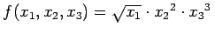

Inhalt Index DeskTop Bronstein

 Wahrscheinlichkeitsrechnung und Mathematische Statistik Theorie der Meßfehler Fehlerfortpflanzung und Fehleranalyse Gaußsches Fehlerfortpflanzungsgesetz
Wahrscheinlichkeitsrechnung und Mathematische Statistik Theorie der Meßfehler Fehlerfortpflanzung und Fehleranalyse Gaußsches Fehlerfortpflanzungsgesetz


| (16.229) |
| Beispiel | ||
|
Am Ausgang des Impulsverstärkers eines Detektorkanals zur Spektrometrierung von Strahlungen wird eine Impulsbreite festgestellt, die auf drei Anteile zurückgeführt werden kann:
|
auf. Durch logarithmische Differentiation ergibt sich der relative Fehler zu
| (16.232) |
und hieraus ergibt sich nach dem Fehlerfortpflanzungsgesetz für den mittleren relativen Fehler
| (16.233) |
| Beispiel |
|
Die Funktion f(x1, x2, x3) habe die Form , die Standardabweichungen sind . Der relative Fehler ergibt sich dann zu |